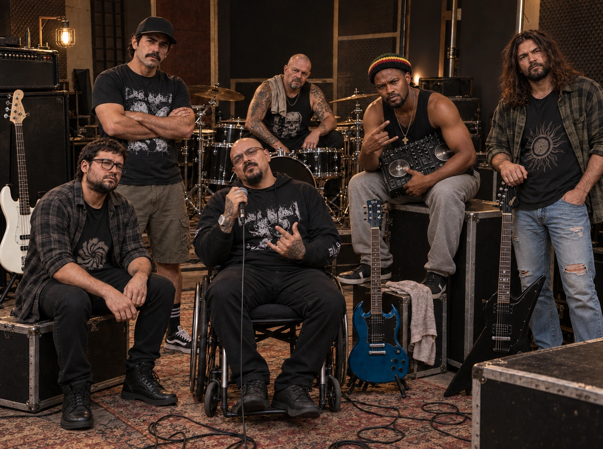

Goiânia, fevereiro de 2024. Break reuniu McFly, Young, Thomaz
e Santiago para tocar covers de bandas internacionais. O nome
provisório era BreakNews.
Entre os covers, havia uma única faixa autoral: “O
Forasteiro”, composta por Bobby Dias e doada à banda.

O FORASTEIRO
Após ouvir a música em uma gravação da festa de aniversário de
Break, Bobby discordou da interpretação. Santiago o convidou
para um ensaio, onde ele poderia explicar sua visão da obra.
BOBBY DIAS & THE ANTI-STATE GUYS
No ensaio, o grupo convidou Bobby a assumir a liderança. A
nova formação ganhou o nome atual em sua homenagem, adotou
suas composições e encontrou uma sonoridade que mistura
nu-metal e grunge.
E a história segue sendo escrita.
INTEGRANTES
Bobby Dias
Vocal, compositor e multiinstrumentista
BIOGRAFIA
Já foi "estrelinha" nos palcos em seu passado. Bobby,
aprendeu muito cedo a "se virar" devido a uma infância
bastante conturbada. É o mais, digamos, "intelectual",
trazendo consigo uma bagagem extensa. Sempre teve muita
facilidade para aprender e estudar, e isso o levou a tocar
desde piano, cordas, até bateria em diversas bandas. Nunca
foi fã de covers, apesar de já ter participado de "bandas
tributo". Escreve desde a infância, tentando através da
arte e da filosofia (ex-palestrante) trazer o "quê" da
banda. Foi convidado por Break a integrar o projeto. A
amizade entre eles não dá para escrever em poucas linhas.
É o único na banda a ainda ter redes sociais, apesar de,
nos últimos tempos, resolver deixá-las paradas. Há um
certo tempo vem lutando contra uma enfermidade complicada,
que chegou a atrapalhar sua mobilidade e "desaparecer" dos
círculos sociais e circuitos goianienses. Observação:
Break, ao integrá-lo na banda, quis o homenagear, trocando
o nome do projeto para o atual.
Break
Baterista e percussão
BIOGRAFIA
Luiz foi peão de rodeio quando mais novo mas sempre
apaixonado por duas rodas. Sua criação foi complicada,
criado apenas com seu pai e a oficina automotiva, então
entre o cheiro de graxa, os torneios de boiadeiros e o
barulho de ferramentas, ele passou a vida transformando
sucatas em máquinas. O apelido "Break" veio dessa época:
ele era o cara que não parava até "quebrar" o problema de
um motor. Por anos, viveu essa dualidade: de noite
trabalhando como zelador e de dia criando. Nos tempos
extras, tocava sozinho (autodidata) uma bateria que um tio
deu a ele de presente. Então seus dias dividiam-se sempre
entre o "customizador" que buscava no ritmo da oficina o
alívio na percussão. Foi nesse ambiente de ideias e graxa
que ele conheceu Santiago e, mais tarde, Bobby. Hoje,
Break não apenas conserta máquinas; ele é o motor rítmico
que sustenta a banda, trazendo a disciplina da mecânica
para cada batida seca e pesada de suas baquetas. Nota:
nunca pergunte sobre suas influências.
Lukas McFly
Baixista e backvocal
BIOGRAFIA
No passado, sua formação acadêmica (e seguindo o exemplo
de seus pais) como bacharel em matemática o levou a ser "o
professor rockeiro", mas nos seus tempos livres, a teoria
musical com seu baixo e um cubo daqueles pequenos, sonhava
com outra "lógica". A influência de John Paul Jones e
Steve Harris, o levava a sonhar com um propósito maior.
Resumindo, Lukas encontrou no baixo não apenas um
instrumento, mas uma ferramenta de expressão política e
pessoal, tocando em diversas bandas nas noites goianas.
Sua trajetória de matemático a baixista na "Bobby Dias
& The Anti-State Guys" tem muita história de
problemas, desde as encrencas com seus pais a brigas nos
palcos da cena goianiense. Ele chegou a deixar sua paixão
de lado por quase uma década antes de se juntar a banda.
Hoje ele é quase o pilar de sustentação da banda, ele que
resolve as encrencas entre os integrantes e usando suas
quatro cordas, cria uma base que casa bem com as batidas
de Break, mas continua sendo o mais introspectivo da
banda.
Marcus Young
Guitarra solo e backvocal
BIOGRAFIA
Marcus passou grande parte da vida como o típico cabeludo
observador e "de boa lábia", nas noites da cena
underground goianiense. Desde cedo, nascido em Inhumas,
cidade próxima a Goiânia, ele sempre se perdeu nos timbres
obscuros do metal extremo e nas "loiras geladas", e quando
tocava sua guitarra, passando por diversas bandas, buscava
uma sonoridade que ninguém parecia compreender. Ele viveu
anos em estúdios caseiros, refinando solos que pareciam
entre gritos indecifráveis a harmônicos. Sua influência?
Ele sempre responde AC/DC, mais nada. Antes da banda,
Marcus era o "mulherengo guitarrista de aluguel", que
nunca se sentia em casa em projeto nenhum, sempre buscando
algo que chamava de "mais visceral". Break o conhecia por
morarem próximos e foi assim que ele foi parar na banda.
Atualmente, ele que é o responsável pelos arpejos e solos
que dão a "cara" única ao som do grupo.
Thomaz
Guitarra base e backvocal
BIOGRAFIA
O mais jovem do grupo, Thomaz sempre foi o típico "garoto
de condomínio" (mas não curte que digam isso a ele),
crescendo em uma Goiânia já conectada e acelerada.
Enquanto os outros construíam suas bases, ele absorvia a
estética urbana das ruas, com seu skate e boa parte da
cultura DIY (Do It Yourself). Ele começou tocando em
garagens com amigos, sempre com uma postura contestadora e
uma energia que sobrava. Charlie Brown Jr é sua principal
influência, apesar de ser apaixonado por alguns riffs
setentistas. Nunca foi "virtuoso" com suas cordas, sempre
preferiu as distorções de seus pedais. Sua trajetória é
com passagem por algumas bandas de escola, o típico "cover
pra galera". Ao entrar para a banda, ele trouxe o frescor
necessário para que o som não ficasse preso ao passado.
Atualmente, ele é o integrante que mais tenta trazer um
timbre rítmico mais urbano para a banda. Extra de
bastidor: Bobby adora tirar sarro dele o chamando de
"garotinho leite com pera", e isso as vezes leva a
desentendimentos.
Santiago
Vocal, DJ e sonoplasta
BIOGRAFIA
Santiago começou a vida, do outro lado do oceano, a
milhares de quilômetros de Goiânia, nas ruas de Kinshasa,
no Congo. Chegou ao Brasil ainda criança, trazendo na
bagagem uma percepção sonora que misturava ritmos
ancestrais com a necessidade de adaptação. Teve uma
infância difícil, morando na periferia, o que o fez gostar
de rap a gritos do nu-metal. Cresceu mergulhado na
sonoplastia, aprendendo a manipular o áudio para dar voz a
ideias alheias e como dj de grupos de rap. Foi nos
bastidores dos palcos que ele criou um vínculo óbvio com
"o zelador" (Break), o que futuramente mudaria tudo. De um
imigrante que buscava seu lugar, ajudar sua mãe em casa a
DJ, Santiago tornou-se meio que "o alquimista da banda".
Hoje, ele funde o digital, com seus scratches na sua
gemini cdm-500 (seu orgulho) com influências desde Frank
Delgado (Deftones) até o KL Jay (Racionais Mcs) com o
vocal, transformando a dor de sua jornada em uma
performance que é, ao mesmo tempo, técnica e profundamente
espiritual. Nota: pode não parecer, mas é o mais "brigão"
da banda.